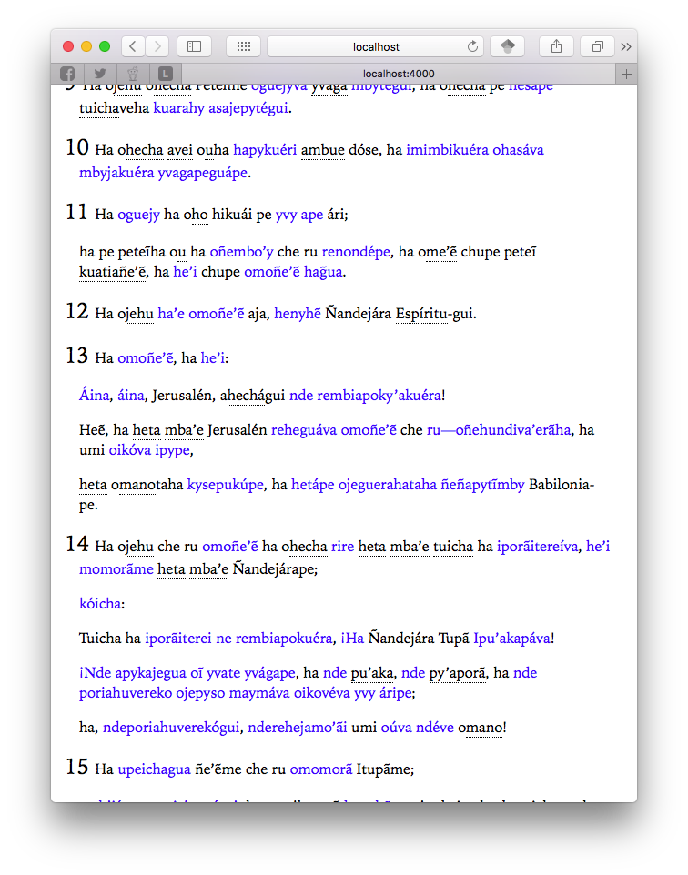
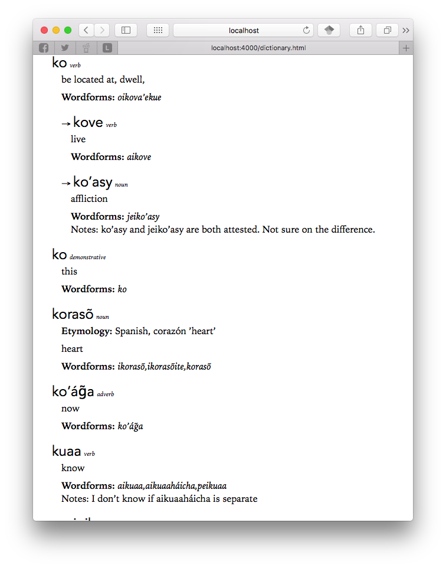

The semester is finishing up, and as usual, the most productive week for me is during finals. Not necessarily productive regarding school work or current research projects, but I always rediscover side projects and hobbies. This week I rekindled my interest in Guarani.
Brazil
I’ve been working on Guarani off and on since 2009. I was living in Campo Grande, Mato Grosso do Sul, Brazil, as a Mormon missionary at the time. Fairly regularly I would meet people that spoke this language called Guarani, and I had friend (a fellow missionary), who had some pedagogical materials that taught Spanish speakers Guarani. So I had to work through the Spanish (I had only been speaking Portuguese for 9 months or at that point), but I was able to decipher some of the basic Guarani morphology and grammar. A while later my dad sent me a copy of the Book of Mormon in Guarani and said I ought to learn what I could. So I sat there with the Guarani, Portuguese, and English translations and would try to figure out new words and morphology.
Again, I was a Mormon missionary at the time, so I didn’t have a lot of time to spent learning this language. I hadn’t begun studying linguistics yet, so I had no idea what a non-Indo-European language could possibly be like and there were a few things that had me stumped. I also didn’t have access to a computer, so I couldn’t keep track of notes and vocabulary very well. So every couple of weeks I’d sit there with a dozen sheets of paper spread all over my desk, trying in vain to keep things alphabetized as I added vocabulary and translations. My Brazilian buddies all thought I was insane for trying to learn this language, but I found it to be a LOT of fun.
One of the more frustrating things was that I wanted to see how a single word was used in other contexts. If I was looking through a sentence and there were three Guarani words I didn’t know, I often had no way of knowing which word corresponded with the meaning in the English sentence. If only I could control+F the book and find the Guarani words in other contexts and figure out the meaning.
Self-study
After I came back to the United States and went back to college at BYU, I found that there were some books written about Guarani grammar, but they were mostly older ones. I didn’t know it at the time, but a former Department Chair in the Department of Linguistics and English Language at BYU was Robert W. Blair, who published some Guarani pedagogical material. I found his Guarani Basic Course at the library as well as his student, Charles Graham’s, Guarani Intermediate Course, and did what I could going through those. There were some other more descriptive grammars of the language written in the mid 20th Century, and I even sat in on a Guarani course for a semester.
Translation Program
I was in my last year at BYU. I was working as a programmer, creating eBooks for WordCruncher and had access to an HTML file of the Guarani Book of Mormon. I had taken a class in Perl already and had gotten pretty proficient through that job. I had also taken Mark Davies’ Corpus Linguistics course. So when I took an NLP course as the capstone to my minor in Linguistic Computing, I decided to write a Guarani translator.
The program worked pretty well and was exactly what I was dreaming of in Brazil. I had paired the Guarani and English text as a “parallel corpus”, meaning each line in one file corresponded to a translated line in the other. What the translator does is it takes an input string (say, mba’apo) and it displays all the Guarani sentences with that word with the English underneath it. Made it very handy to see how words (or parts of words) were used in other contexts.
What it then does it is look at all the words in both the English and Guarani sentences with the word, keeps track of their frequencies, then looks at the frequencies for all words in the entire corpus and compares the two. Words that have nothing to do with the translation will occur with roughly the same frequency in the matched sentences as they do in the full corpus. But words that correspond to the same meaning will occur relatively much more often in the matched sentences compared the corpus as a whole. So say the word work appears once every 1000 words in the whole corpus. If it suddenly appears once every 25 words in the matched words, statistically that’s a big difference, and odds are pretty good that work is a translation for mba’apo (and it is).

So using this I could find out which English words correlated with which Guarani words. Not a perfect translator, especially since it didn’t use any fancy NLP processing, but not bad.
My interest in Guarani, which was mostly about its nasal harmony, verbal morphology, and trying to document the grammar as a whole, started to wane as I started grad school and focused more on sociolinguistics and dialectology. But my reading comprehension is still… okay let’s face it, not that great, but I’m surprised at how much I was able to learn through self-study and a custom computer program.
Interactive Dictionary
I think what started this recent resurgence in Guarani was, strangely enough, making this website. I’ve acquired some more HTML and CSS skills and realized that I could make something useful with a web browser. So I dusted off my old files and started something fun.
In just a week I was able to make a pretty useful website (locally hosted only for now) with two main pages. The first is the entire corpus. Unlike what I had before, I could take advantage of the formatting to display useful information. All the words I know are in regular black text, but the words I don’t know stand out in blue. That makes it easy to figure out which ones I need to learn next. For the words I do know, the roots are underlined, so I can quickly see the base and what morphology is stemming off of it. The interactive part is that if I mouseover the root, a basic definition shows up in the form of a tooltip. So if I’ve forgotten a word, I can very quickly remind myself of what it means. Very handy.

How am I keeping track of what I know and don’t know? The other page on the site is a dictionary. I usually kept all this stuff in a spreadsheet somewhere, but here I can utilize the formatting to make it look like a real dictionary. I’ve got roots, possible word forms, derivatives, translations, parts of speech, etymology, other notes, and the infrastructure to include example sentences and other metadata. All this is stored on a file on my computer, and when I learn a new word, I just add it to the bottom of the file and a Perl script will take care of alphabetizing it and making sure it looks good for the CSS to take over.

The result is a slick system where I can quickly see what words I need to learn and I can easily add them to the dictionary. I then run a lightning fast Perl script and refresh my browser, and I’ve got an updated corpus and dictionary.
The system is set up to handle as big of a corpus or dictionary as I’m willing to feed it. For now, I’m only a couple paragraphs in and I’ve got over 100 entries in the dictionary. It will take hundreds of hours to go through my entire corpus. But for the first time I’ll be creating a decent Guarani dictionary, which is kinda what I had in mind to do the whole time.